리눅스마스터-2급 (2011-03-12 기출문제)
1과목: 리눅스 운영 및 관리
1. 다음 중 일반적인 리눅스의 디렉터리 구성에 대한 설명으로 알맞은 것은?
- /boot : 부트 이미지 디렉터리
- /etc : 사용자의 홈 디렉터리
- /home : 각종 시스템 설정 파일 저장 디렉터리
- /var : 라이브러리 저장 디렉터리
(정답률: 79%)

2. 다음 파일의 퍼미션에 대한 설명으로 옳지 않은 것은?
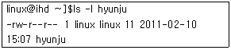
- 파일의 소유자는 linux 이다.
- 파일의 소유자는 파일의 읽기/쓰기가 가능하다.
- 파일의 속한 그룹은 hyunju 이다.
- 그룹에 속한 사용자는 읽기 만 가능하다.
(정답률: 81%)
3. 다음 ls 명령어의 옵션 중 현재 디렉터리에 포함된 하위 디렉터리의 내용까지 출력해 주도록 하는 것은?
- -t
- -h
- -S
- -R
(정답률: 73%)
4. 파일의 권한 모드에서 SetUID(실행시 파일의 소유자 권한으로 실행)를 지정하기 위한 파일 모드로 올바른 것은?
- 777
- 1777
- 2777
- 4777
(정답률: 62%)
5. 새로 만드는 파일의 권한에 파일이 속한 그룹과 다른 사용자에게 쓰기를 제한하기 위한 명령어로 올바른 것은?
- umask 011
- umask 022
- umask 044
- umask 066
(정답률: 71%)
6. 다음 명령어 실행 결과가 아닌 것은?
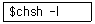
- /bin/sh
- /bin/bash
- /bin/cmd
- /sbin/nologin
(정답률: 51%)
7. 다음 중 리눅스 파일 시스템의 종류가 아닌 것은?
- ext
- ext2
- ext3
- HFS
(정답률: 83%)
8. 다음 중 파일시스템을 구성하는 파티션의 마운트가 기록되어 있는 파일은?
- /etc/mtab
- /etc/fstab
- /proc/fstab
- /proc/mounts
(정답률: 62%)
9. 다음과 같이 현재 디렉터리의 총 사용량만을 보기 위해 사용하는 명령어로 알맞은 것은?
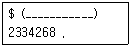
- du -a
- du -k
- du -h
- du -s
(정답률: 41%)
10. 리눅스 사용자 ihd에 할당된 디스크 사용량을 보는 명령어는?
- df ihd
- du ihd
- finger ihd
- quota ihd
(정답률: 31%)
11. 프로세스의 상태보기 ps 명령어에서 확인할 수 없는 정보는?
- UID
- NAME
- PID
- TTY
(정답률: 43%)
12. 다음 명령어에 대한 설명으로 틀린 것은?
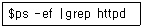
- 프로세스의 상태를 보여준다.
- f 옵션은 정보를 자세히 보여준다.
- 사용자가 소유한 프로세스만 보여준다.
- httpd 라는 프로세스만을 출력한다.
(정답률: 55%)
13. 다음 중 프로세스간의 통신을 위한 signal이 아닌 것은?
- HUP
- START
- STOP
- TERM
(정답률: 44%)
14. 프로세스에 대한 다음 설명 중 틀린 것은?
- 프로그램을 화면에 보여주며 실행되는 상태는 foreground 이다.
- 프로그램을 background로 실행 할 때는 명령어 뒤에 &를 붙인다.
- foreground로 실행한 후 종료되기 전 Ctrl-z를 누르면 suspend 된다.
- suspend된 것을 foreground로 하기 위해서는 “bg %<작업번호>”를 사용한다.
(정답률: 72%)
15. 프로세스 중 background로 실행되면서 서버 역할을 하거나 그 기능을 도와주는 프로세스는?
- 프로그램(program)
- 프로시저(procedure)
- 데몬(deamon)
- 스레드(thread)
(정답률: 88%)
16. 실행되고 있는 프로세스들 간의 연결 구조를 트리 형식으로 출력하는 명령어는?
- ps
- pstree
- top
- cron
(정답률: 86%)
17. top 명령어를 통하여 확인 할 수 없는 내용은?
- 시스템에 연결 중인 사용자 수
- CPU의 상태
- 프로세스가 실행되는 터미널 정보
- 메모리 사용 상태
(정답률: 36%)
18. 프로세스에 자주 사용되는 시그널과 그 의미가 잘못 짝지어진 것은?
- SIGHUP : 실행중인 프로그램에 정의되어 있는 정상적인 방법으로 종료하게 한다.
- SIGINT : 현재 작동 중인 프로그램의 동작을 멈출 때 사용한다.
- SIGQUIT : 사용자가 터미널에서 종료키(quit)를 누를 때 보내어진다.
- SIGKILL : 무조건 실행중인 프로그램을 중지 시킨다.
(정답률: 50%)
19. 다음 중 실행 중인 프로세스들의 우선순위를 변경하는 명령어는?(오류 신고가 접수된 문제입니다. 반드시 정답과 해설을 확인하시기 바랍니다.)
- nice
- kill
- ps
- signal
(정답률: 84%)
20. 다음 중 crontab 명령어의 옵션에 대한 설명으로 틀린 것은?
- -u username -e : root가 해당 사용자의 스케줄 정보 수정
- -e : 스케줄 정보 수정
- -l : 현재 등록되어 있는 스케줄 정보 출력
- -r : 현재 등록된 스케줄 정보 재실행
(정답률: 48%)
21. 다음 중 리눅스에서 제공하는 쉘이 아닌 것은?
- C shell
- Bourne Again Shell
- Ghost Shell
- Korn Shell
(정답률: 79%)
22. ‘ls -al’ 명령을 ‘ll’ 만 입력함으로서 동일한 기능을 할 수 있도록 설정하고자 할 때 사용 가능한 명령으로 알맞은 것은?
- make
- alias
- similar
- split
(정답률: 83%)
23. remote로 telnet을 이용하기 위하여 vt100모드를 사용하고자 할 때 사용하여야 하는 환경변수는 무엇인가?
- TERM 변수
- LOGNAME 변수
- PWD 변수
- MODE 변수
(정답률: 43%)
24. bash 쉘의 환경설정 파일로 사용자가 정의한 alias들과 함수들이 정의되어 있는 파일은?
- .cshrc
- .srclog
- .bashrc
- .skeleton
(정답률: 84%)
25. PATH 변수에 ‘PATH=/bin:/usr/bin/:.’ 라고 설정 하였을 때, 다음 설명 중 틀린 것은?
- PATH 변수는 쉘이 명령을 탐색하는 디렉터리를 나열한다.
- 쉘은 디렉터리가 나열되는 순서로 디렉터리를 탐색한다.
- 쉘은 명령 실행 시 먼저 디렉터리 /bin을 참조 한다.
- 쉘은 명령실행 시 제일 가까운 .(현재의 디렉터리)를 가장 먼저 참조한다.
(정답률: 65%)
26. 다음 환경변수에 대한 설명 중 틀린 것은?
- 사용자가 사용하는 쉘이 bash로 설정되어 있다면 사용자가 로그인 할 때 bash_profile과 .bashrc가 실행된다.
- rc 파일들은 쉘이 실행될 때 실행된다.
- rc 파일을 변경시키게 되면 쉘을 다시 실행 시키지 않아도 변경된 내용이 자동으로 적용 된다.
- rc 파일은 쉘이 실행될 때마다 적용될 수 있는 특정 쉘에 관계된 변수와 설정 사항을 포함 한다.
(정답률: 66%)
27. 다음 ( ) 안에 들어갈 내용으로 알맞은 것은?
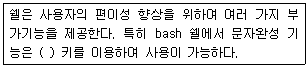
- Esc
- Tab
- Alt
- Alt-Shift
(정답률: 78%)
28. 다음 ( ) 안에 들어갈 내용으로 알맞은 것은?
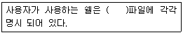
- /etc/shells
- /bin/shells
- /usr/bin/shells
- /etc/passwd
(정답률: 35%)
29. vi 편집기에 대한 설명으로 틀린 것은?
- 명령모드와 입력모드, EX모드 방식이 있다.
- 문자를 입력할 때는 반드시 입력모드로 하여야 한다.
- 입력모드에서 명령모드로 전환 시는 tab 키를 누른다.
- 명령모드에서 콜론(:)을 치면 아래쪽에 명령 라인이 생기게 된다.
(정답률: 77%)
30. 다음 ( ) 안에 들어갈 명령으로 알맞은 것은?
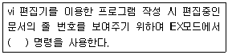
- :nu all
- :se nu
- :rept
- :number
(정답률: 80%)
31. 다음 ( ) 안에 들어갈 옵션으로 알맞은 것은?
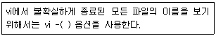
- q
- v
- o
- r
(정답률: 38%)
32. vi 편집기 사용 중 커서를 현재 줄의 맨 끝으로 이동하려고 할 때 사용되는 명령어로 알맞은 것은?
- 명령어모드에서 O
- 명령어모드에서 $
- 명령어모드에서 ^
- 명령어모드에서 w
(정답률: 54%)
33. 다음 중 vi 에디터에 대한 설명으로 틀린 것은?
- 다양한 편집기능이 제공된다.
- 비모드형 편집기로 명령수행 시 <Ctrl> 키와 다른 키의 조합을 이용하여야 한다.
- 편집 중 커서의 자유로운 이동이 가능하다.
- 문서작성 후 :wq를 실행시키면 편집중인 파일을 저장하고 종료한다.
(정답률: 71%)
34. emacs 편집기 명령에 대한 설명 중 틀린 것은?
- 종료하는 명령어는 Ctrl-x, Ctrl-c 이다.
- 라인의 처음으로 이동하는 명령어는 Ctrl-a 이다.
- 라인의 끝으로 이동하는 명령어는 Ctrl-e 이다.
- 파일의 끝으로 이동하는 명령어는 Ctrl-v 이다.
(정답률: 60%)
35. 다음 ( ) 안에 들어갈 내용으로 알맞은 것은?
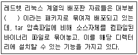
- RPM
- DEV
- ZIP
- HAT
(정답률: 77%)
36. 다음 ( ) 안에 들어갈 내용으로 알맞은 것은?
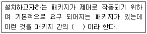
- 상호접속성(Inter-connectivity)
- 상호운용성(Inter-Operability)
- 의존성(Dependency)
- 관련성(Relativity)
(정답률: 72%)
37. movie 디렉터리의 전체파일을 movie.tar로 묶고 싶을 때 사용하는 명령어로 알맞은 것은?
- tar cvf movie movie.tar
- tar cvf movie.tar movie
- tar xvf movie.tar movie
- tar xvf movie movie.tar
(정답률: 46%)
38. RPM 설치 명령에 대한 설명으로 틀린 것은?
- RPM 설치 시 -ivh 옵션을 함께 지정하여 에러 등을 모니터링 하는 것이 좋다.
- 패키지 설치문제가 발생하여 기존의 불필요한 패키지를 제거하는 경우 -d 옵션을 이용한다.
- RPM 패키지 업그레이드는 -U 옵션을 사용 한다.
- 업그레이드시 사용하는 -F 옵션은 이미 설치된 패키지와 비교하여 오직 설치하고자 하는 패키지 버전이 높을 때만 업그레이드를 실시하게 해준다.
(정답률: 47%)
39. 설치된 패키지의 파일목록 가운데 문서파일만 보고자 할 때 사용할 수 있는 옵션은?
- #rpm -qi ihd
- #rpm -qs ihd
- #rpm -qd ihd
- #rpm -ql ihd
(정답률: 36%)
40. RPM 설치 시 단순한 메시지보다는 진행과정을 눈으로 볼 수 있도록 연속적인 샾(#)문자가 나오게 할 때 사용하는 옵션으로 알맞은 것은?
- -i 옵션
- -v 옵션
- -h 옵션
- -e 옵션
(정답률: 55%)
41. dpkg 프로그램에 대한 설명으로 틀린 것은?
- #dpkg --install ihd.deb : ihd.deb 프로그램을 설치한다.
- #dpkg --purge ihd : ihd 패키지를 완전히 제거한다.
- #dpkg --remove ihd : ihd 패키지의 구성 파일을 보관하고 실행가능 구성요소만 제거한다.
- #dpkg --search ihd : 인터넷상에서 ihd 패키지를 찾는다.
(정답률: 41%)
42. 다음 ( ) 안에 들어갈 옵션으로 알맞은 것은?
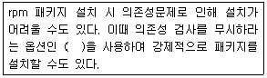
- --nodesign
- --nodeps
- --nosignal
- --norelay
(정답률: 75%)
43. 현재 프린터 큐의 상태를 모니터링 하기 위한 명령어로 알맞은 것은?
- lpc
- lpq
- lpr
- pr
(정답률: 75%)
44. 리눅스의 일반적인 프린터 설치 방법이 아닌 것은?
- local
- remote lpd
- SMB
- DHCP
(정답률: 71%)
45. 프린터 설치에 관련된 정보를 가지고 있는 설정 파일은?
- /dev/lp0
- /etc/lp0
- /dev/printcap
- /etc/printcap
(정답률: 51%)
46. 플로피디스크나 CD-ROM의 장치를 설치하고 사용할 때 마운트 포인터가 위치하는 일반적인 디렉터리는?
- /mnt
- /dev
- /etc
- /
(정답률: 67%)
47. 커널 사운드 드라이버 중 무료로 사용할 수 있고 커널에 포함되어 있는 드라이버는?
- OSS/Free
- OSS
- ALSA
- 업체 제공 드라이버
(정답률: 56%)
48. 리눅스 프린터 설치순서로 가장 알맞은 것은?
- 프린터큐설정 - 프린터종류설정 - 프린터드라이버설정 - 프린터기종설정
- 프린터기종설정 - 프린터큐설정 - 프린터종류설정 - 프린터드라이버설정
- 프린터종류설정 - 프린터큐설정 - 프린터기종설정 - 프린터드라이버설정
- 프린터기종설정 - 프린터종류설정 - 프린터드라이버설정 - 프린터큐설정
(정답률: 45%)
2과목: 리눅스 활용
49. 다음 X윈도우가 구동되는 과정 중 클라이언트 옵션의 구동 과정을 순서대로 알맞게 나열한 것은?
- xinitrc → .xinit → xclients → .Xresources
- xinitrc → .Xresources → .Xmodmap → xclients
- xinitrc → xserverrc → .Xresources → .Xmodmap
- xclients → xinitrc → .Xmodmap → .Xresources
(정답률: 51%)
50. 다음 X 윈도 구성 원리에 대한 설명 중 틀린 것은?
- X protocol은 서버와 클라이언트 사이에서 통신되는 Request, Reply, Event, Error의 기본 메시지이다.
- Xlib의 기능이 많지 않아 Xlib보다 하위 라이브러리인 X toolkit을 사용한다.
- X toolkit의 종류는 Xt Intrinsics, Xaw, XView, Motif, Qt, GTK 등 이다.
- X 윈도 시스템은 서버/클라이언트로 구성되었다.
(정답률: 56%)
51. X 윈도는 유닉스 시스템의 표준 그래픽 인터페이스로 많은 애플리케이션을 갖추고 있는데, 다음 중 표준 X 애플리케이션과 그에 대한 설명이 틀린 것은?
- xterm : 텍스트기반의 터미널 에뮬레이터
- xdm : 로그인 관리자
- xclock : 간단한 시계를 표시
- xman : 컴퓨터의 상태 표시
(정답률: 54%)
52. 다음 중 일반적인 KDE 데스크톱의 세개 영역이 아닌 것은?
- 패널(panel)
- 테스크바(taskbar)
- 데스크톱(desktop)
- 프레임(frame)
(정답률: 59%)
53. 다음 KDE에서의 파일관리에 대한 설명 중 틀린 것은?
- 원하는 폴더를 마우스 왼쪽버튼으로 클릭하면 실행이 된다.
- cp, mv, ln 등의 명령어를 이용하지 않고 드래그 앤 드롭을 통해 가능하다.
- KDE에서는 네트워크를 통한 인터넷은 가능하나, ftp상의 파일 액세스는 불가능하다.
- 파일의 이름, 권한 등의 속성을 바꿀 수 있다.
(정답률: 69%)
54. GNOME 데스크톱 환경에서 startx를 입력하였는데 X-Window가 실행되지 않고 에러가 발생한 경우 다음 중 실행하여 설정 해주어야 하는 것은?
- Xconfigurator
- Login
- Logout
- Windows
(정답률: 79%)
55. 다음 중 윈도 매니저의 대표적인 종류가 아닌 것은?
- fvwm
- twm
- gimp
- mwm
(정답률: 68%)
56. 다음 윈도 메이커의 종류 중 AfterStep의 유틸리티 종류가 아닌 것은?
- asmail
- ascp
- winlist
- asclock
(정답률: 60%)
57. LAN의 전송방식 중 하나로 CSMA/CD 방식을 사용하며, 컴퓨터들을 근거리망으로 연결시키는 표준방식을 무엇이라 하는가?
- Ethernet
- FDDI
- X.25
- Interrupt
(정답률: 62%)
58. 다음 LAN의 분류 중 버스형 토폴로지에 대한 설명이 아닌 것은?
- 한 번에 한 컴퓨터만 전송할 수 있으므로 컴퓨터들의 숫자가 네트워크의 성능을 좌우한다.
- 신호 반사에 의한 상호 간섭을 막기 위해 종단기(Terminator)가 존재한다.
- 각 컴퓨터가 임의의 다른 사용자 시스템들과 직접 상호 연결되어 있어 전체적으로 그물과 같은 형태를 이루는 구조이다.
- CSMA/CD 방식이 대표적이며 또한 토큰 패싱(Token Passing)방식에 사용된다.
(정답률: 67%)
59. 다음 FDDI(Fiber Data Distributed Interface)-Ⅰ에 대한 설명 중 틀린 것은?
- 1982년 10월 미국 표준협회(ANSI)에서 초고속광 LAN-FDDI 초안이 발표 되었다.
- 100Mbps 대역폭을 이중 광케이블로 연결하는 구조이다.
- LAN의 구조로서 전송 매체로 광섬유를 사용한다.
- 접속 형태는 스타 형태이다.
(정답률: 59%)
60. 다음 중 원거리 통신망의 회선교환방식에 대한 설명 중 틀린 것은?
- 송신측과 수신측을 연결하는데 고정적인 회선을 통하는 방식이다.
- 통신이 이루어지면 그 회선은 다른 사람이 사용할 수 없다.
- X.25 프로토콜을 주로 사용한다.
- 일종의 물리적인 전용선을 쓰는 것과 같은 방식으로 전화가 대표적인 회선교환방식이다.
(정답률: 47%)
61. 다음 중 컴퓨터와 컴퓨터 사이의 통신이 가능 하도록 하는 규약이며 통신 표준을 무엇이라 하는가?
- 순서제어
- 흐름제어
- 인터럽트
- 프로토콜
(정답률: 82%)
62. 다음 프로토콜의 기본기능 중 송신 속도가 처리 능력을 초과하지 않도록 조정하는 기능을 무엇이라 하는가?
- 데이터 대열의 분할(Segmentation)
- 에러제어(Error Control)
- 흐름제어(Flow Control)
- 인터럽트(Interrupt)
(정답률: 73%)
63. 다음 중 프로토콜이 다른 통신망을 상호 접속하기 위한 통신장비로 알맞은 것은?(오류 신고가 접수된 문제입니다. 반드시 정답과 해설을 확인하시기 바랍니다.)
- 라우터
- 게이트웨이
- 브리지
- 리피터
(정답률: 53%)
64. 다음 LAN의 통신장비 중 디지털 신호를 새로이 재생하거나 출력전압을 높여주는 목적으로만 사용 되는 전송신호의 재생중계 장치를 무엇이라 하는가?
- 게이트웨이
- 브리지
- 라우터
- 리피터
(정답률: 76%)
65. 다음 중 OSI모델의 각 계층에 대한 설명이 틀린 것은?
- 물리계층 : 상위층으로부터 받은 데이터를 통신회선을 통하여 비트단위로 전송하는 계층
- 네트워크 계층 : 데이터링크 계층이 제공하는 인접한 개방형 시스템 간에 데이터 전송 기능을 이용하여 연결성과 통신경로선택을 제공하는 계층
- 데이터링크 계층 : 인접한 개방형 시스템 사이에서 전송단위(비트의 모음)를 오류 없이 전달하는 기능을 수행하는 계층
- 전송계층 : 통신 장치들 간의 상호운용성을 갖도록 보장하는 계층
(정답률: 43%)
66. 다음 중 TCP/IP의 특징에 대한 설명으로 틀린 것은?
- 개방형 프로토콜 표준으로 특정 H/W나 OS에 독립적으로 사용가능하다.
- 이 기종 하드웨어를 가진 고립된 네트워크에서는 사용이 불가능하다.
- 다른 종류의 네트워크를 통합할 수 있다.
- 거대한 네트워크에서도 TCP/IP 장치를 찾아 낼 수 있다.
(정답률: 65%)
67. TCP/IP 프로토콜의 트랜스포트 계층의 프로토콜로 end-to-end 에러탐지와 수정기능을 가진 안정성 있는 프로토콜은 무엇인가?
- DNS
- NFS
- TCP
- UDP
(정답률: 68%)
68. 다음 중 프로토콜의 번호가 정의되어 있는 파일로 알맞은 것은?
- /etc/protocols
- /etc/fstab
- /etc/resolv.conf
- /etc/passwd
(정답률: 69%)
69. 다음 중 루트도메인 아래의 최상위도메인 종류가 아닌 것은?
- com
- net
- kr
- co
(정답률: 62%)
70. 다음 중 KDE상에서 웹브라우저 뿐만 아니라 기본 파일관리자, 파일 뷰어로서 널리 사용되고 있는 리눅스 웹브라우저는?
- 컹커러(Konqueror)
- 오페라(Opera)
- 모질라(mozilla)
- 넷스케이프(Netscape)
(정답률: 47%)
71. 다음 중 인터넷에서 대용량의 파일을 주고 받기 위해 사용하는 프로토콜을 무엇이라 하는가?
- FTP
- Konqueror
- Telnet
- hypertext
(정답률: 74%)
72. 다음 중 인터넷상에서 채팅을 즐길 수 있게 해주는 서비스를 무엇이라 하는가?
- telnet
- SSH
- IRC
- FTP
(정답률: 74%)
73. 다음 중 SSH 에서 제공되는 프로그램의 종류가 아닌 것은?
- scp
- ssh
- sftp
- socket
(정답률: 66%)
74. 다음 중 인터넷 서비스 업체로부터 직접 회선을 할당 받아 자신의 컴퓨터를 인터넷과 연결하는 방법으로 각 컴퓨터에 고유한 IP 주소를 할당 받는 방식을 무엇이라 하는가?
- modem
- 전용선
- SLIP
- PPP
(정답률: 60%)
75. loopback 인터페이스로 자신의 컴퓨터에 연결할 수 있도록 해주는 목적으로 사용되는 통상적인 IP주소로 알맞은 것은?
- 127.0.0.1
- 255.255.255.0
- 0.0.0.1
- 10.10.10.1
(정답률: 82%)
76. 다음 중 리눅스에서 라우팅 테이블을 다루기 위해서 사용하는 명령어로 알맞은 것은?
- route
- hostname
- df
- stat
(정답률: 83%)
77. 다음 중 임베디드 시스템에 있어서 리눅스의 장점에 대한 설명이 아닌 것은?
- Open source, open architecture 이다.
- Real Time 운영을 지원한다.
- 리눅스는 내장형시스템에만 사용되도록 개발 되었다.
- 소규모 모듈단위로 설계되어 있다.
(정답률: 64%)
78. 다음 Beowulf 클러스터 아키텍처에 대한 설명 중 틀린 것은?
- 패러다임이 평이하다.
- implementation이 용이하다.
- 오픈소스 운영체제를 사용한다.
- 많은 분야에서 사용되고 있지만 수치계산 분야에서는 활용이 불가능하다.
(정답률: 68%)
79. 리눅스를 발전시키기 위한 방법으로 가장 알맞지 않은 것은?
- 정부 및 대기업들의 리눅스 지원 유도
- 오픈 소스(open source)의 점진적인 유료화 추진
- 고객에게 신뢰를 줄 수 있는 우수 사례 발굴 및 기술력 확보
- 우수한 전문 리눅스 기술자의 배출
(정답률: 76%)
80. 블루투스의 기술에 대한 다음 설명 중 틀린 것은?
- 최대 데이터 전송속도는 100Mbps 이다.
- 양방향 전송을 위해서 시분할 다중전송 방식이 사용된다.
- 2.4GHz 대역의 ISM 대역을 사용한다.
- 간섭방지를 위한 주파수 호핑 방식을 사용한다.
(정답률: 56%)